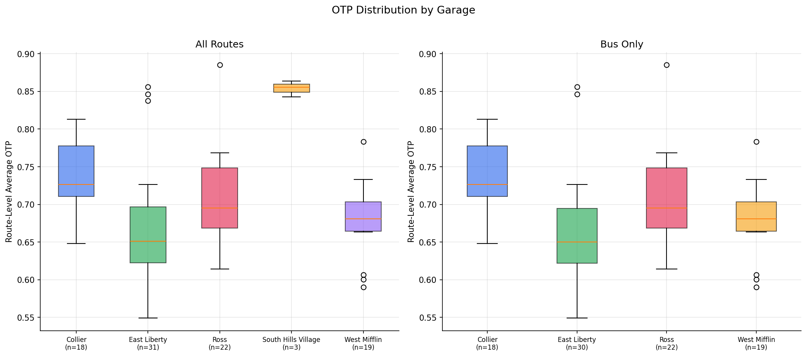
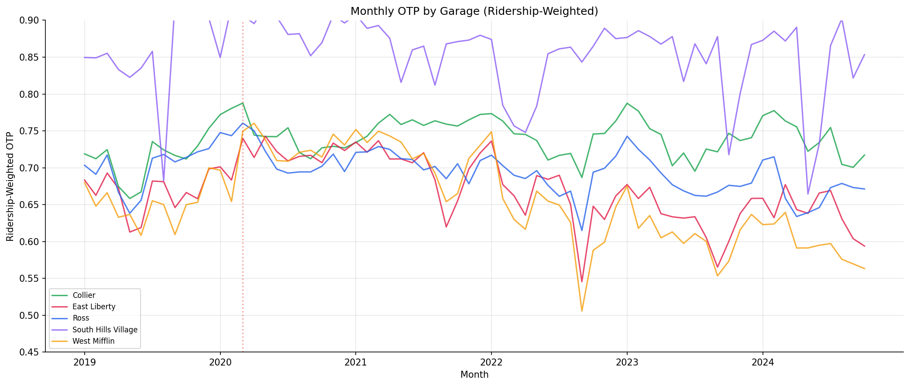

Analysis
23 - Garage-Level Performance
Ridership and External Factors
Coverage: 2017-01 to 2025-11 (from otp_monthly, ridership_monthly).
Built 2026-05-15 22:40 UTC · Commit cf330ed
Page Navigation
Analysis Navigation
Data Provenance
flowchart LR
23_garage_performance(["23 - Garage-Level Performance"])
t_otp_monthly[("otp_monthly")] --> 23_garage_performance
01_data_ingestion[["Data Ingestion"]] --> t_otp_monthly
u1_01_data_ingestion[/"data/routes_by_month.csv"/] --> 01_data_ingestion
u2_01_data_ingestion[/"data/PRT_Current_Routes_Full_System_de0e48fcbed24ebc8b0d933e47b56682.csv"/] --> 01_data_ingestion
u3_01_data_ingestion[/"data/Transit_stops_(current)_by_route_e040ee029227468ebf9d217402a82fa9.csv"/] --> 01_data_ingestion
u4_01_data_ingestion[/"data/PRT_Stop_Reference_Lookup_Table.csv"/] --> 01_data_ingestion
u5_01_data_ingestion[/"data/average-ridership/12bb84ed-397e-435c-8d1b-8ce543108698.csv"/] --> 01_data_ingestion
t_ridership_monthly[("ridership_monthly")] --> 23_garage_performance
01_data_ingestion[["Data Ingestion"]] --> t_ridership_monthly
t_route_stops[("route_stops")] --> 23_garage_performance
01_data_ingestion[["Data Ingestion"]] --> t_route_stops
t_routes[("routes")] --> 23_garage_performance
01_data_ingestion[["Data Ingestion"]] --> t_routes
t_stops[("stops")] --> 23_garage_performance
01_data_ingestion[["Data Ingestion"]] --> t_stops
d1_23_garage_performance(("numpy (lib)")) --> 23_garage_performance
d2_23_garage_performance(("polars (lib)")) --> 23_garage_performance
d3_23_garage_performance(("scipy (lib)")) --> 23_garage_performance
classDef page fill:#dbeafe,stroke:#1d4ed8,color:#1e3a8a,stroke-width:2px;
classDef table fill:#ecfeff,stroke:#0e7490,color:#164e63;
classDef dep fill:#fff7ed,stroke:#c2410c,color:#7c2d12,stroke-dasharray: 4 2;
classDef file fill:#eef2ff,stroke:#6366f1,color:#3730a3;
classDef api fill:#f0fdf4,stroke:#16a34a,color:#14532d;
classDef pipeline fill:#f5f3ff,stroke:#7c3aed,color:#4c1d95;
class 23_garage_performance page;
class t_otp_monthly,t_ridership_monthly,t_route_stops,t_routes,t_stops table;
class d1_23_garage_performance,d2_23_garage_performance,d3_23_garage_performance dep;
class u1_01_data_ingestion,u2_01_data_ingestion,u3_01_data_ingestion,u4_01_data_ingestion,u5_01_data_ingestion file;
class 01_data_ingestion pipeline;
Findings
Findings: Garage-Level Performance
Summary
PRT garages differ significantly in route-level OTP, and the difference survives controlling for route structure. An OLS model with stop count and geographic span as controls shows that garage dummies add significant explanatory power (F = 4.55, p = 0.005). Collier garage routes run +5.4 pp above East Liberty routes after controlling for stop count and span (p < 0.001).
Key Numbers
| Garage | Routes | Mean OTP | Ridership-Wtd OTP | Avg Daily Riders |
|---|---|---|---|---|
| South Hills Village | 3 | 85.4% | 85.3% | 11,588 |
| Collier | 18 | 73.6% | 73.9% | 14,226 |
| Ross | 22 | 70.7% | 69.5% | 20,141 |
| West Mifflin | 19 | 67.9% | 65.8% | 32,388 |
| East Liberty | 31 | 67.1% | 67.5% | 42,259 |
- Kruskal-Wallis (all routes): H = 24.4, p = 0.0001 (5 garages)
- Kruskal-Wallis (bus only): H = 20.0, p = 0.0002 (4 garages)
- 93 routes with 12+ months of paired data
Controlled OLS Model (bus only, n = 89, reference = East Liberty)
| Model | R² | Adj R² |
|---|---|---|
| Base (stop_count + span) | 0.313 | 0.297 |
| Full (+ garage dummies) | 0.410 | 0.374 |
F-test for garage dummies: F = 4.55, p = 0.005 -- garages are significant after controls.
| Feature | Coefficient | p-value |
|---|---|---|
| stop_count | -0.00039 | 0.001 |
| span_km | -0.0022 | 0.014 |
| garage_Collier | +0.054 | <0.001 |
| garage_Ross | +0.029 | 0.040 |
| garage_West_Mifflin | +0.014 | 0.358 |
Observations
- Collier routes outperform East Liberty by +5.4 pp even after controlling for stop count and span (p < 0.001). This is a substantial and statistically robust effect.
- Ross routes outperform East Liberty by +2.9 pp after controls (p = 0.04), a marginally significant effect.
- West Mifflin does not differ significantly from East Liberty after controls (+1.4 pp, p = 0.36). The raw difference between these two garages (0.8 pp) was largely explained by route structure.
- Adding garage dummies increases R² from 0.313 to 0.410 (+9.7 pp), a meaningful improvement beyond what route structure alone explains.
- The monthly trend chart shows all garages move together with system-wide trends (COVID spike, 2022 trough), but the relative ordering is stable: Collier consistently above Ross, which is consistently above East Liberty and West Mifflin.
Discussion
The controlled analysis overturns the initial interpretation that garage differences were purely a composition effect. Collier's advantage is real and operationally meaningful: after accounting for the fact that it operates shorter routes with fewer stops, Collier routes still outperform East Liberty routes by 5.4 pp.
Operational feedback from PRT-experienced observers identifies several likely explanations for the Collier advantage:
- Lower corridor congestion. Collier serves the western suburbs, which have less traffic congestion than the eastern corridors served by East Liberty and West Mifflin. The AADT-based congestion analysis (Analysis 27) found 24-hour traffic volume non-significant, but that measure is too coarse to capture the peak-hour congestion differences that matter for bus operations.
- Shorter downtown routing. Some Collier routes have very short segments in downtown Pittsburgh, reducing exposure to the congested street grid where delays accumulate. East Liberty routes tend to traverse longer downtown segments.
- Route distribution. Garages do not cover equal areas or operate equal numbers of routes. Collier's route portfolio may be inherently more favorable for OTP beyond what stop count and span capture.
These factors suggest the garage effect is primarily a corridor-level congestion proxy rather than evidence of operational differences in garage management. The controlled model accounts for route length and stop count but not for the traffic environment each route operates in -- and the available traffic data (AADT) is too coarse to fill this gap.
West Mifflin's poor raw performance, by contrast, is largely explained by route structure: it operates the long eastern-corridor routes, and after controlling for that, it is statistically indistinguishable from East Liberty.
The R² increase from 0.31 to 0.41 suggests that garage assignment captures roughly 10% of OTP variance beyond what stop count and span explain. Given the corridor-congestion explanation, this 10% likely represents traffic environment variance rather than garage-specific operational practices.
Caveats
- The
current_garagefield is a snapshot; historical garage assignments are not available. If routes were reassigned between garages, the analysis would not capture that (though the data shows no garage changes for any route). - The controlled model uses only stop count and span as structural controls. Adding further controls (e.g., traffic density, road type, schedule slack) could reduce or eliminate the garage effect.
- The F-test assumes normally distributed residuals; the Kruskal-Wallis test (non-parametric) is more robust but does not support covariates.
- South Hills Village (n=3 rail routes) and Incline (excluded, no OTP data) are too small for meaningful comparison and are excluded from the controlled model.
Review History
- 2026-02-27: RED-TEAM-REPORTS/2026-02-27-analyses-19-25.md — 1 significant issue. Added route-garage uniqueness guard: most-common garage per route used for grouping, with assertion to catch future data with reassignments.
Output

OTP distribution by garage.

monthly OTP by garage.
No interactive outputs declared.
Monthly OTP and ridership aggregates by operating garage.
Preview CSV
Route-level OTP, ridership, and feature records used in garage comparison models.
Preview CSV
garage-level summary statistics.
Preview CSV
Methods
Methods: Garage-Level Performance
Question
Do PRT garages (Ross, Collier, East Liberty, West Mifflin) differ systematically in the OTP and ridership of routes they operate?
Approach
- Join ridership data (which includes
current_garage) with OTP data by route and month. - Compute garage-level aggregate OTP (ridership-weighted and unweighted) and total ridership per month.
- Test for differences across garages using Kruskal-Wallis on route-level average OTP, grouped by garage.
- Plot garage-level OTP trends over time to see if garages diverge or move together.
- Control for route composition (garages may differ because they operate different types of routes, not because of operational quality) by comparing within-mode (bus-only) results.
- Fit a controlled OLS model (bus-only): base model with stop_count and span_km, then full model adding garage dummy variables (East Liberty as reference, being the largest). Use an F-test on the nested models to determine if garage dummies add significant explanatory power beyond route structure.
Data
| Name | Description | Source |
|---|---|---|
otp_monthly |
route_id, month, otp | prt.db table |
ridership_monthly |
route_id, month, current_garage, avg_riders; filtered to day_type='WEEKDAY' | prt.db table |
routes |
route_id, mode for bus-only stratification | prt.db table |
route_stops |
route_id, stop_id for stop counts | prt.db table |
stops |
stop_id, lat, lon for geographic span computation | prt.db table |
Notes: Join on route_id and month; overlap period only (Jan 2019 -- Oct 2024). Exclude routes with fewer than 12 months of paired data or NULL garage.
Output
Source Code
|
Sources
| Name | Type | Why It Matters | Owner | Freshness | Caveat |
|---|---|---|---|---|---|
| otp_monthly | table | Primary analytical table used in this page's computations. | Produced by Data Ingestion. | Updated when the producing pipeline step is rerun. | Coverage depends on upstream source availability and ETL assumptions. |
Upstream sources (5)
|
|||||
| ridership_monthly | table | Primary analytical table used in this page's computations. | Produced by Data Ingestion. | Updated when the producing pipeline step is rerun. | Coverage depends on upstream source availability and ETL assumptions. |
Upstream sources (5)
|
|||||
| route_stops | table | Primary analytical table used in this page's computations. | Produced by Data Ingestion. | Updated when the producing pipeline step is rerun. | Coverage depends on upstream source availability and ETL assumptions. |
Upstream sources (5)
|
|||||
| routes | table | Primary analytical table used in this page's computations. | Produced by Data Ingestion. | Updated when the producing pipeline step is rerun. | Coverage depends on upstream source availability and ETL assumptions. |
Upstream sources (5)
|
|||||
| stops | table | Primary analytical table used in this page's computations. | Produced by Data Ingestion. | Updated when the producing pipeline step is rerun. | Coverage depends on upstream source availability and ETL assumptions. |
Upstream sources (5)
|
|||||
| numpy | dependency | Runtime dependency required for this page's pipeline or analysis code. | Open-source Python ecosystem maintainers. | Version pinned by project environment until dependency updates are applied. | Library updates may change behavior or defaults. |
| polars | dependency | Runtime dependency required for this page's pipeline or analysis code. | Open-source Python ecosystem maintainers. | Version pinned by project environment until dependency updates are applied. | Library updates may change behavior or defaults. |
| scipy | dependency | Runtime dependency required for this page's pipeline or analysis code. | Open-source Python ecosystem maintainers. | Version pinned by project environment until dependency updates are applied. | Library updates may change behavior or defaults. |